Cosmología II: energía oscura, inflación y los tres primeros minutos
El CMB declara que el universo es plano — pero el censo de materia se queda en un 30%. Las supernovas tipo Ia revelan una expansión acelerada, entra en escena la energía oscura, la inflación resuelve los dos grandes problemas del Big Bang, y la nucleosíntesis primordial explica con precisión exquisita por qué el universo es 3/4 hidrógeno y 1/4 helio.
La clase 4 dejó dos cabos sueltos: el censo de materia sugiere un universo abierto, pero el espectro de potencias del CMB calza exactamente con la predicción para un universo plano. Esta clase final resuelve la contradicción por la vía dura: hay que agregar al inventario una componente que nadie tenía en mente — la energía oscura, un 70% del presupuesto cósmico — y encima modificar la historia inicial con un período inflacionario. El premio de consuelo es enorme: al final del camino, el modelo predice las abundancias de helio, deuterio y litio primordiales con una precisión que calza con lo observado. Sabemos, con evidencia, lo que pasó en los primeros minutos del universo.
El veredicto del CMB: universo plano
La geometría del universo actúa como una lente sobre las manchas del CMB.
El espectro de potencias del CMB no solo se mide: se predice. La física del universo hasta los 380.000 años es sorprendentemente simple — una sopa de partículas y fotones — y al poner las mediciones sobre la predicción, calzan de manera "increíblemente precisa" ("la primera vez que vi eso, ¿qué? Maravilloso, realmente"). La predicción clave: las estructuras dominantes del CMB deben tener un tamaño físico que, en un universo plano, se ve como ~1 grado en el cielo.
Y aquí entra la geometría como lente. La luz del CMB ha viajado ~13.800 millones de años siguiendo la forma del espacio:
- Universo cerrado (Ω₀ > 1, curvatura positiva): los rayos convergen — como los caminantes al Polo Norte, "un abrazo y un besito" — y las manchas se verían más grandes de lo que son.
- Universo abierto (Ω₀ < 1, curvatura negativa): los rayos divergen y las manchas se verían más pequeñas.
- Universo plano (Ω₀ = 1): las manchas se ven de su tamaño verdadero: 1 grado.
Lo que se mide es exactamente 1 grado. Conclusión categórica de la clase: ¡¡el CMB nos dice que este universo es plano y crítico!!
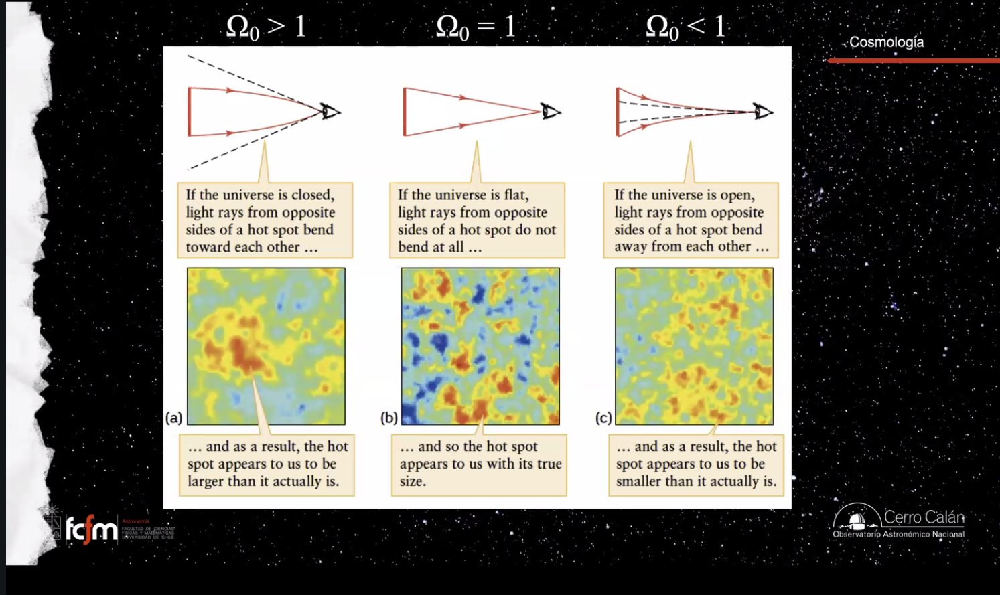
El censo de Ω: falta un 70%
Contándolo todo — fotones, estrellas, materia oscura — llegamos apenas al 30% de lo necesario.
El problema: si el CMB exige Ω₀ = 1, la contabilidad paso a paso se queda cortísima:
| Componente | Aporte a Ω₀ | Comentario |
|---|---|---|
| Fotones del CMB + neutrinos | ~10⁻⁴ | Las componentes "calientes". El CMB era "grito y plata" al comienzo (rayos gamma); hoy, submilimétrico: sigue siendo el mayor número de fotones del universo, pero energéticamente casi nada. |
| Radiación de las estrellas | ~10⁻⁶ | Todos los fotones estelares juntos: dos órdenes de magnitud menos que el CMB. |
| Materia luminosa | ~0.002 | Galaxias: número de estrellas × masa de cada una. |
| + curvas de rotación | ~0.03 | La materia oscura de los halos galácticos. |
| + cúmulos y lentes gravitacionales | ~0.3 | La materia oscura entre galaxias, medida por dinámica de cúmulos y lensing. |
Total: ~30% de lo necesario para un universo crítico. "Y el CMB nos dice: plano. Claramente algo estaba mal, algo tenía que solucionarse."
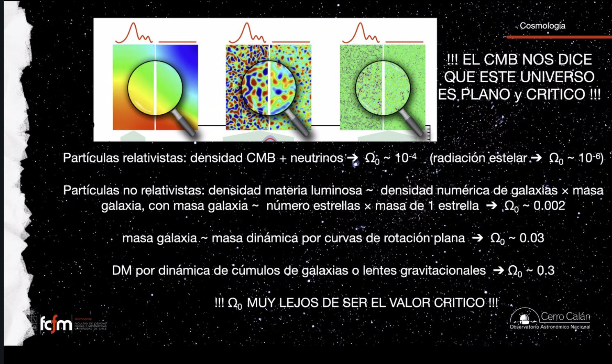
Mirar lejos es mirar al pasado
Los telescopios son máquinas del tiempo — y los tres universos posibles tienen pasados distintos.
La luz viaja a velocidad finita: la imagen de una galaxia a millones de años luz la muestra como era hace esos millones de años. Eso convierte a la astronomía en la única ciencia que puede observar directamente el pasado — y aquí es la herramienta decisiva, porque los tres universos posibles (abierto, crítico, cerrado) tienen historias de expansión distintas. Al futuro no podemos mirar; al pasado sí: si construimos diagramas de Hubble de épocas cada vez más tempranas, reconstruimos cómo cambió la tasa de expansión y determinamos en qué universo vivimos.
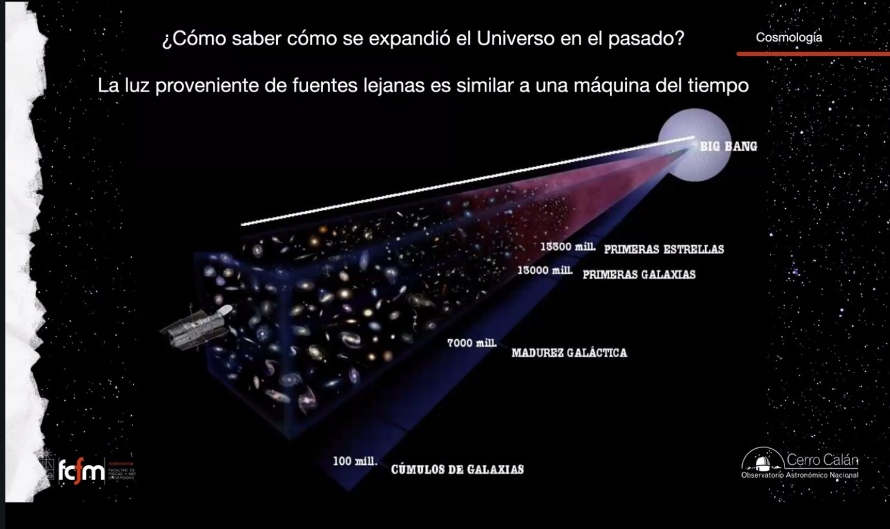
La escalera de distancias
Paralaje → cefeidas → supernovas tipo Ia: cada peldaño calibra al siguiente.
De las dos cantidades del diagrama de Hubble, la difícil es la distancia: una galaxia débil puede ser intrínsecamente débil y cercana, o lumínosísima y lejanísima — indistinguible sin más información. La solución es una escalera de distancias donde cada método calibra al siguiente:
- Paralaje: método puramente geométrico — el primer peldaño, sin supuestos físicos. Alcanza estrellas y cúmulos cercanos (Proxima Centauri, Vega, Polaris).
- Cefeidas: estrellas muy luminosas (arriba en el diagrama HR) con una relación período–luminosidad: mides el período de pulsación, sabes la luminosidad, deduces la distancia. Calibradas con paralajes; llegan a las Nubes de Magallanes y Andrómeda.
- Supernovas tipo Ia: no son la muerte de una estrella masiva — son otro tipo de supernova (de ahí el nombre raro). Calibradas con cefeidas, sirven de candelas estándar hasta redshift ~2.
El método calibrador de supernovas tipo Ia se desarrolló en Chile, con Mario Hamuy — entonces en el Observatorio de Cerro Tololo, luego académico del departamento — como uno de sus autores fundamentales. Su trabajo (el proyecto Calán/Tololo) fue la base de la calibración con que después se descubrió la aceleración… y el Nobel se lo llevaron otros.
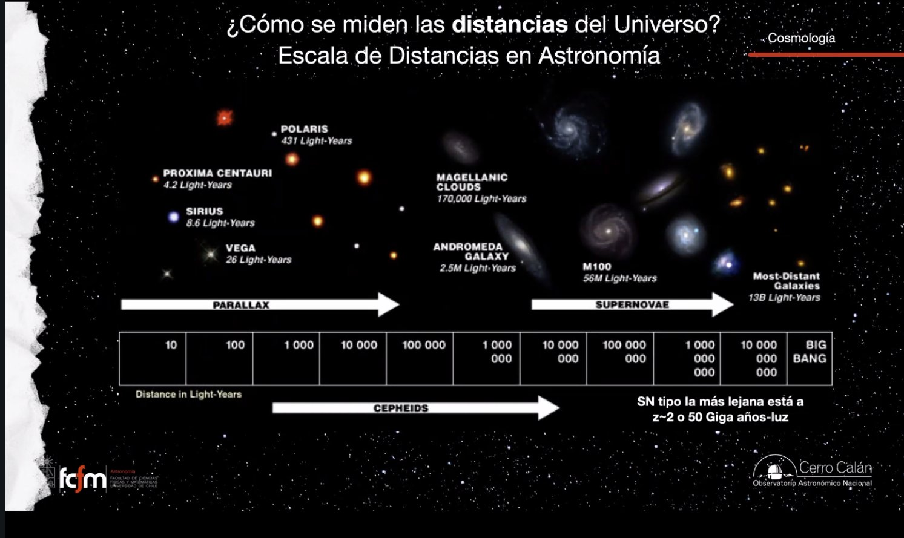
Medir la expansión: redshift y factor de escala
La parte fácil: un espectro basta, y z te dice directamente cuánto ha crecido el universo.
La otra coordenada del diagrama es fácil: se toma el espectro del objeto, se identifican líneas conocidas (por ejemplo el doblete del calcio) y se compara la longitud de onda observada con la de laboratorio:
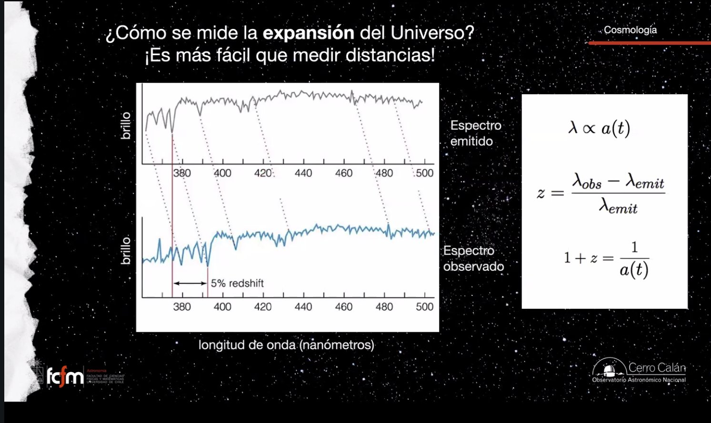
Diagramas de Hubble del pasado
El experimento mental de los dos universos — y qué curvatura esperar de la línea de Hubble.
Experimento mental de la clase: la misma galaxia, a la misma distancia, en dos universos distintos. En el universo A (expansión rápida) su redshift es mayor; en el B (expansión lenta), menor. Llenando ambos universos de galaxias: el lento produce una relación distancia–redshift más empinada, el rápido una más plana (ojo: en los diagramas modernos los ejes están al revés que en el de Hubble — distancia en Y, redshift en X).
Ahora, la línea local de Hubble solo seguiría recta hacia el pasado si la tasa de expansión hubiera sido siempre la misma — y eso, sabemos, es el universo vacío. En los tres universos con contenido, la expansión solo puede frenarse (la materia atrae): el universo antes se expandía más rápido, y la curva a alto redshift debía doblarse en el sentido correspondiente. Todo el juego de los años 90 era medir con cuánto cuidado se doblaba esa línea, para distinguir universo crítico de abierto. Nadie dudaba del signo de la curvatura — solo de su magnitud.
1998: la expansión acelerada
Los puntos se fueron para el otro lado. Ningún universo propuesto explicaba el diagrama.
Usando el método calibrado por Hamuy sobre supernovas a redshifts cada vez más altos, los primeros resultados llegaron en 1998–1999… y los puntos se desviaron hacia el lado prohibido: las supernovas lejanas aparecían más débiles (más lejos) de lo esperado en cualquier universo que se frena. La expansión del universo no se está desacelerando: se está acelerando. Cada vez nos expandimos más rápido.
Ningún universo de los propuestos (abierto, crítico, cerrado — todos de pura materia) explica el diagrama moderno. Hubo que inventar algo, y a ese algo le llamaron energía oscura ("alguien vio demasiado Star Wars"). El ajuste del Dark Energy Survey lo dice con números: el modelo que funciona tiene ~35% materia y ~65% energía oscura; el modelo de 100% materia queda descartado.
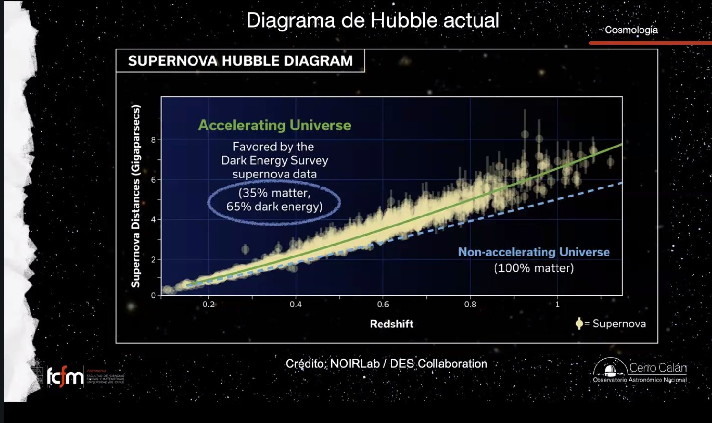
Hubo quien dijo "¡obvio, típico!": un universo con energía oscura es más viejo que los tres universos de materia — y eso se necesitaba, porque los modelos de evolución estelar (isocronas de cúmulos globulares) daban edades incómodamente cercanas o superiores a la edad del universo predicha. La energía oscura estiró la cronología y deshizo la paradoja.
La energía oscura
Una densidad de energía del vacío — la constante cosmológica de Einstein, resucitada.
La forma más simple de la energía oscura es, ni más ni menos, la constante cosmológica que Einstein puso para congelar el universo. No con su valor, pero sí con su forma: un término constante que entra en el ρ de la ecuación de Friedmann (ese ρ debe incluirlo todo). Y su interpretación es notable: una densidad de energía constante que es propiedad del vacío mismo.
Si cada centímetro cúbico de vacío trae consigo una cantidad fija de energía oscura, entonces: el universo se expande → se crea nuevo vacío → aparece más energía oscura → la expansión se acelera → se crea más vacío → … Una reacción en cadena en que la expansión se alimenta a sí misma. Eso es la expansión acelerada.
¿Es realmente constante? No lo sabemos. Los físicos han producido "todos los modelos habidos y por haber"; una familia conocida es la quintaesencia (quintessence), con variantes que terminan en expansión catastrófica (Big Rip), otras en que la energía oscura revierte su acción y colapsa el universo, y otras en que nada de eso pasa. Mientras no comprendamos su naturaleza, el destino del universo sigue abierto.
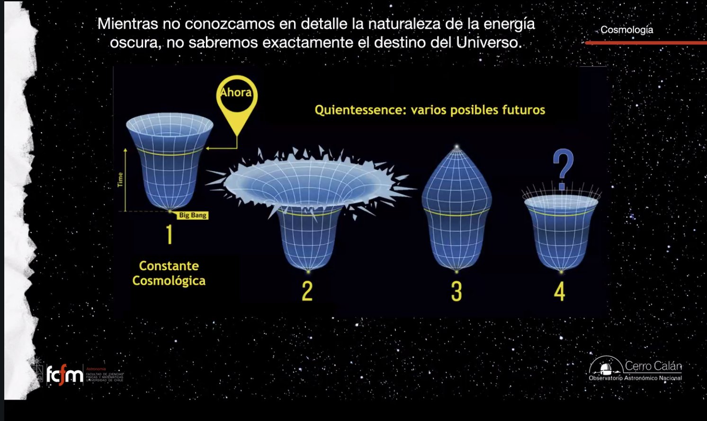
Los resultados de la colaboración DESI (marzo 2025), combinados con CMB y supernovas, sugieren que la energía oscura podría estar cambiando en el tiempo: el mejor ajuste no coincide con la predicción de la constante cosmológica. La reacción de la clase: "yo no me creo nada todavía, de verdad — muy pronto". Rubin, James Webb y el resto de los grandes proyectos están tratando de restringir exactamente esto.
El presupuesto del universo
72% energía oscura, 23% materia oscura, ~5% de lo que entendemos — y no siempre fue así.
El presupuesto actual: ~72% energía oscura, ~23% materia oscura y ~5% materia ordinaria (átomos — lo único que entendemos y conocemos). De la materia oscura hay al menos candidatos (WIMPs y compañía, aunque "nos ha ido pésimo probando"); de la energía oscura, ni idea: es física que nadie tenía en mente y es la única que explica cómo se expande el universo hoy y cómo se expandió en el pasado.
Pero estas proporciones cambian con el tiempo, porque la energía oscura es propiedad del espacio: cuando el universo era pequeño, casi no aportaba. A los 380.000 años (z ~ 1100, la época del CMB) el presupuesto era otro: 63% materia oscura, 15% fotones, 12% átomos, 10% neutrinos — los fotones y neutrinos pesaban mucho más porque sus longitudes de onda eran cortas y sus velocidades altísimas (y estos neutrinos son los del Big Bang: también existe un fondo cósmico de neutrinos). La energía oscura ni aparece en el diagrama.
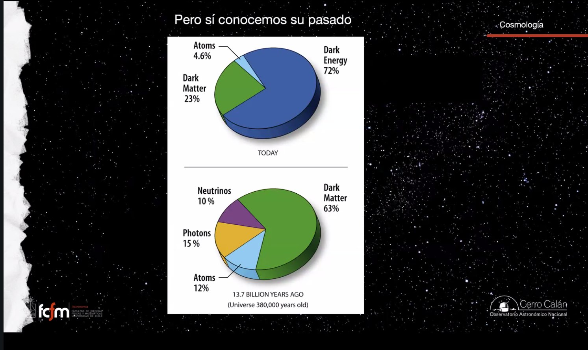
Los dos problemas del Big Bang
Flatness Problem y Horizon Problem: la teoría, tal como la contamos, se cae.
Rebobinemos: creemos en el Big Bang por la expansión, el CMB y la nucleosíntesis. Y sin embargo, la teoría tal como la hemos presentado tiene dos fallas graves:
El problema de la planitud (Flatness Problem)
¿Por qué el universo es justo plano? El caso crítico es exclusivísimo — "un gramo más y es cerrado, un gramo menos y es abierto". ¿Por qué no un poco más de materia, un poco menos, harto más, harto menos? No hay razón para ese ajuste fino.
El problema del horizonte (Horizon Problem)
El CMB tiene la misma temperatura (2.725 K) en todas las direcciones, con desviaciones de una parte en 10⁵ — discrepancias recién en la quinta cifra significativa. Pero para que una región alcance temperatura uniforme debe estar causalmente conectada: debe haber tiempo para que la información (el equilibrio termodinámico) viaje de un lado a otro. La analogía de la clase: una casa con la pieza norte asoleada y la sur fría solo se uniformiza si se abren las puertas y el aire circula. Y aquí está el problema: al momento de formarse el CMB (con precisión: z = 1375, universo de 372.000 años, recombinación de ~70.000 años de duración), regiones opuestas del cielo jamás estuvieron en contacto — no importa qué historia de expansión se asuma. La cota máxima de regiones conectadas subtiende hoy ~2 grados en el cielo: deberíamos ver un CMB de parches de ~2° con temperaturas dispares, y vemos uniformidad casi perfecta.
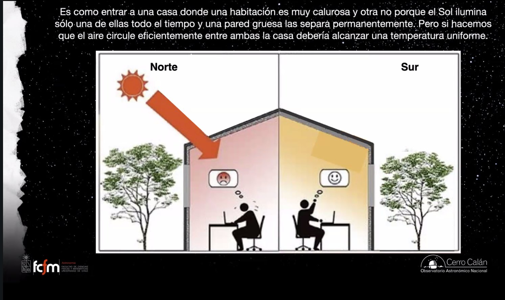
Inflación
Dos pájaros de un tiro: la propuesta de Alan Guth (años 80) y cómo comprobarla desde Chile.
La solución mata los dos problemas de un tiro: muy temprano en la vida del universo hubo un período inflacionario en que la tasa de expansión fue colosal. Según el diagrama de la clase, el universo pasó de ~10⁻²⁶ metros a ~10²⁴ metros — unos 50 órdenes de magnitud — en una fracción de instante (la era inflacionaria se ubica entre t ~ 10⁻³⁵ y 10⁻³³ segundos).
- Resuelve el horizonte: antes de inflar, todo el universo observable actual era una región minúscula, causalmente conectada y termalizada — con la misma temperatura. La inflación separó regiones que ya se habían puesto de acuerdo: las regiones A y B que hoy vemos en bordes opuestos del cielo compartieron temperatura antes de ser lanzadas fuera del horizonte una de la otra.
- Resuelve la planitud: como el globo con la hormiga (radio 1 cm → 1 km → 10⁴⁸ m): infla cualquier superficie lo suficiente y localmente se ve plana. No es que el universo sea exactamente plano: es que observamos un pedazo tan pequeño del total que no podemos medir su curvatura — "salgan al patio de su casa y midan el radio terrestre: la Tierra es plana".
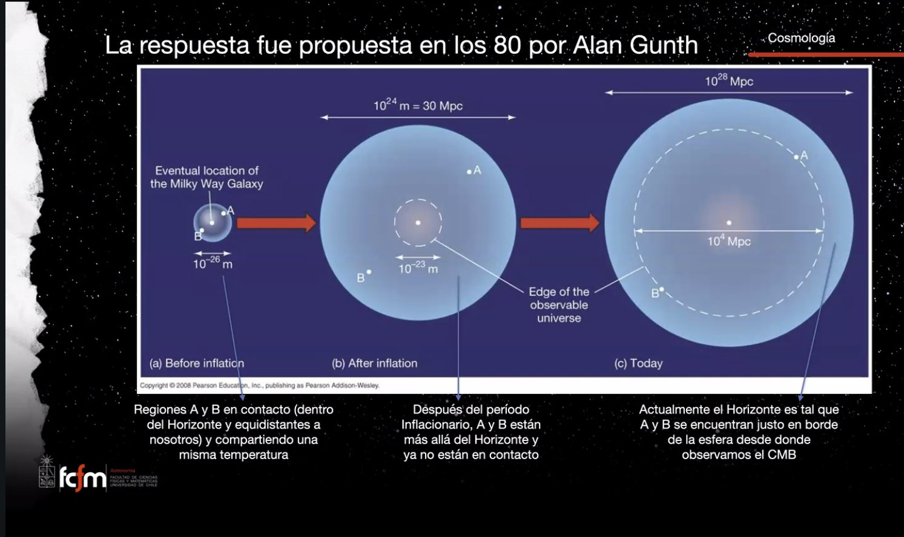
Los diagramas clásicos ("línea de tiempo del universo" de NASA/WMAP) ponen el Big Bang primero y la inflación después. El entendimiento actual los da vuelta: primero fue la inflación, y el "Big Bang" — el estado denso y caliente — es lo que quedó cuando el período inflacionario terminó, con un universo ya de tamaño finito. La fuente recomendada: los artículos de Ethan Siegel (Starts With a Bang / "Ask Ethan") — "escribe excelente y se mantiene increíblemente al día" (la clase también recomienda no buscar su foto).
La inflación no está comprobada, pero tiene predicciones concretas. Los fotones del CMB se polarizan al interactuar con los electrones libres del medio intergaláctico (medido hace ~20 años); sobre eso debería haber una modulación adicional, muy débil y con un patrón específico, remanente del período inflacionario. El Observatorio Simons, partiendo en el norte de Chile, busca exactamente esa señal. Si la inflación no es correcta, "estamos en problemas": planitud y homogeneidad quedan sin solución.
Nucleosíntesis primordial
El tercer pilar: por qué el universo es ~3/4 hidrógeno y ~1/4 helio — y la ventana de los mil segundos.
Reacciones reversibles y el enfriamiento
En el universo temprano toda reacción era reversible (las flechitas para ambos lados de la química del colegio): tres quarks formaban un protón, llegaba un fotón "rayos gammasísimos" y ¡paf!, lo rompía. El universo vivía en ese ir y venir. Pero la expansión enfría los fotones sin pausa: lo que podían destruir en un momento, al rato ya no. Así se congelaron, en orden, los nucleones, luego los núcleos, y (400.000 años después) los átomos.
El cuello de botella del neutrón
Los protones, una vez formados, no tienen ningún problema. Los neutrones sí: un neutrón libre es inestable — se desintegra (n → p + e + ν) con vida media del orden de ~1000 segundos (dato de la clase; el valor de laboratorio es ~880 s). Para hacer helio (2 protones + 2 neutrones) se necesitan neutrones, así que hubo una ventana de oportunidad: se abrió cuando los fotones dejaron de destruir los neutrones que se formaban, y se cerró cuando los neutrones libres restantes "cometieron suicidio". Solo en esa ventana de ~mil segundos pudieron formarse los núcleos de helio — y por eso las proporciones primordiales son las que son.
En el primer microsegundo, protones y neutrones participaban en aniquilación/producción de pares; al enfriarse el plasma, la razón quedó en ~1 neutrón por cada 5 protones, y siguió bajando por el decaimiento del neutrón libre (hasta ~1:7). Entre los 2 y 3 minutos (T < 10⁹ K) pudo formarse deuterio estable — el eslabón débil de la cadena D → ³He → ⁴He — y a los ~15 minutos la fusión ya no fue posible. Composición final: ~25% helio y ~75% hidrógeno en masa (10% / 90% en número de núcleos), más trazas de deuterio, helio-3 y litio-7. La clase redondea "70/30"; el número fino de las láminas es 75/25.
La predicción exquisita
Aquí el modelo se luce. Conociendo un solo parámetro — η, la razón entre partículas (bariones) y fotones, que se obtiene independientemente del espectro de potencias del CMB (misión WMAP) — el modelo predice las abundancias de ⁴He, deuterio, ³He y ⁷Li. Contra las observaciones: el helio calza tan bien "que ni se nota la diferencia"; el deuterio, sensible a η, calza perfecto; el helio-3 está dentro del rango; solo el litio-7 queda "un poquitito mal" — y es el elemento más escaso y el más fácil de crear y destruir en procesos estelares posteriores. Conclusión: entendemos la física del universo en sus primeros minutos — mucho antes del CMB.
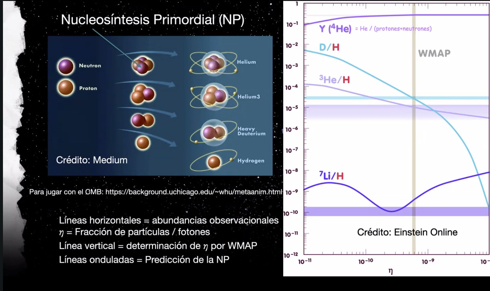
"Los tres primeros minutos" de Steven Weinberg (Premio Nobel de Física 1979) relata exactamente este período — recomendación central de la clase (con la aclaración en vivo de que la ventana del helio son ~1000 s ≈ 17 minutos, no 3: "esto es lo que está mal; hay que chequear los números, pero la sucesión de eventos es correcta"). Dato de yapa de las láminas: la nucleosíntesis no requiere materia oscura — de lo cual se deduce que ésta no interactúa ni electromagnéticamente ni por fuerza nuclear fuerte. Y la última diapositiva, sin que nadie alcanzara a preguntar: una ilustración de multiversos, cada uno "haciendo lo que se le viene en gana" en términos de expansión. "Hasta aquí llega el curso, señoras y señores."
Explorar conceptos
Dos calculadoras: qué significa un redshift, y cómo el cuello de botella del neutrón fija la fracción de helio.
Conceptos clave
Tabla de repaso rápido.
| Concepto | Idea esencial |
|---|---|
| CMB como test de geometría | La curvatura curva los rayos: manchas más grandes (cerrado), más chicas (abierto) o de tamaño verdadero ~1° (plano). Se mide 1°: el universo es plano. |
| Censo de Ω₀ | Fotones+neutrinos ~10⁻⁴, materia luminosa ~0.002, +curvas de rotación ~0.03, +cúmulos/lentes ~0.3. Falta el 70%. |
| Escalera de distancias | Paralaje (geométrico) → cefeidas (período–luminosidad) → SN Ia (hasta z~2). Cada peldaño calibra al siguiente. Calibración clave: Mario Hamuy, Chile. |
| 1 + z = 1/a | El redshift mide directamente cuánto creció el universo desde que la luz partió; z = 1 ⇒ universo a mitad de tamaño. |
| Expansión acelerada | Descubierta en 1998 con SN Ia: los puntos se desvían al lado contrario del esperado. Nobel a la aceleración; el modelo ganador: ~35% materia, ~65% energía oscura. |
| Energía oscura | Densidad de energía del vacío (forma más simple: constante cosmológica). Reacción en cadena: expansión → más vacío → más energía oscura → más expansión. |
| Quintaesencia | Familia de modelos donde la energía oscura varía; futuros posibles: Big Rip, recolapso, o nada especial. DESI 2025 insinúa variación — aún sin veredicto. |
| Presupuesto cósmico | Hoy: 72% energía oscura, 23% materia oscura, ~5% átomos. A los 380.000 años: 63% MO, 15% fotones, 12% átomos, 10% neutrinos — las proporciones cambian. |
| Flatness Problem | ¿Por qué el universo es justo plano, si el caso crítico es un valor exacto e inestable del contenido? |
| Horizon Problem | El CMB es uniforme a 10⁻⁵, pero las regiones que lo emitieron nunca estuvieron causalmente conectadas (cota: parches de ~2°). |
| Inflación | Expansión colosal (~50 órdenes de magnitud, t ~ 10⁻³⁵ s) propuesta por Guth en los 80: termaliza primero, separa después (horizonte) y aplana lo observable (planitud). |
| Orden actual | Los modelos actuales invierten los diagramas clásicos: primero inflación, después el "Big Bang" caliente (fuente: Ethan Siegel). |
| Observatorio Simons | En el norte de Chile: busca la modulación de polarización del CMB que sería la firma del período inflacionario. |
| Ventana del helio | Entre que los fotones dejaron de romper neutrones y que los neutrones libres decayeron (~10³ s): solo ahí se formó el ⁴He primordial. |
| Abundancias primordiales | ~75% H / ~25% He en masa, más D, ³He y ⁷Li en trazas; predichas desde η (bariones/fotones, medido por WMAP) con precisión exquisita (salvo el litio). |
| Los tres primeros minutos | Libro de Steven Weinberg (Nobel 1979) que relata este período; recomendación bibliográfica de cierre del curso. |
Exámenes de práctica
10 exámenes de 5 preguntas: 3 de alternativas autocorregibles + 2 de respuesta escrita con solución propuesta.